自学更新 2026-11-25 · 戒指图集、法夫冠冕与还愿冠 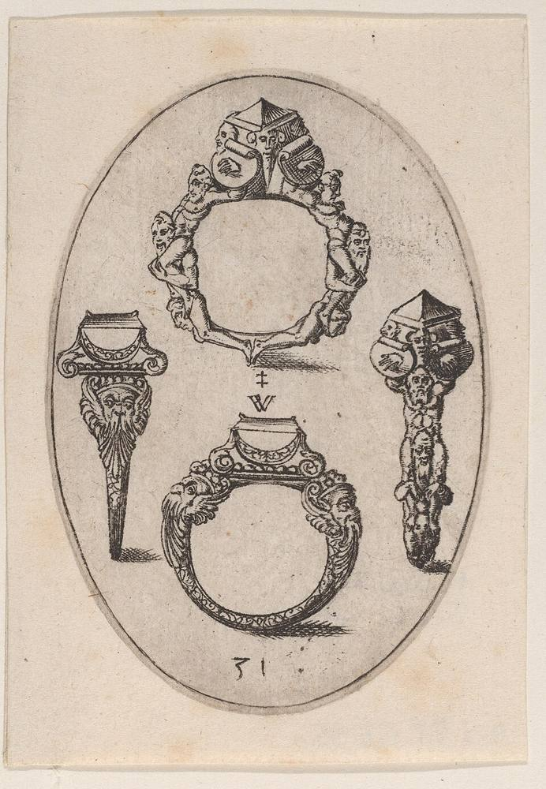
书 · 皮埃尔·沃埃里奥《Livre d'aneaux d'orfèvrerie》1561法国洛林版画家的戒指设计图集,40幅图版,满是怪兽、人形戒托;大都会可免费下载;图为第31图版 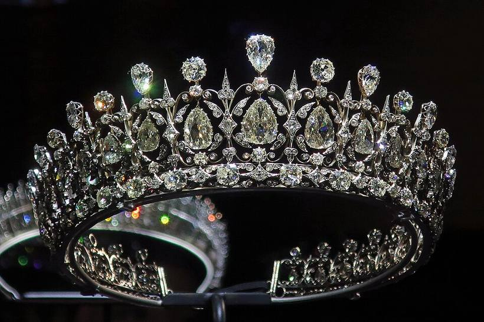
人物 · 奥斯卡·马桑 Oscar Massin1829–1913 比利时出生、在巴黎做钻石首饰:把钻石做成像花枝、蕾丝一样轻;图为他设计的法夫冠冕,1889年路易丝公主的结婚礼物 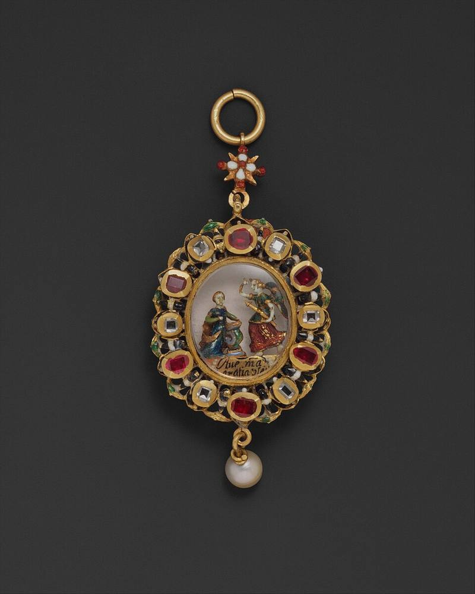
趋势 · 收藏家首饰整批上拍英国《Country Life》2026.11.4:艺术收藏家 Pauline Karpidas 的70件首饰将于12.8在纽约苏富比拍卖,含一件17世纪珐琅圣物盒十字吊坠;老首饰和当代名家同场;图为大都会藏西班牙圣物盒吊坠(示意) 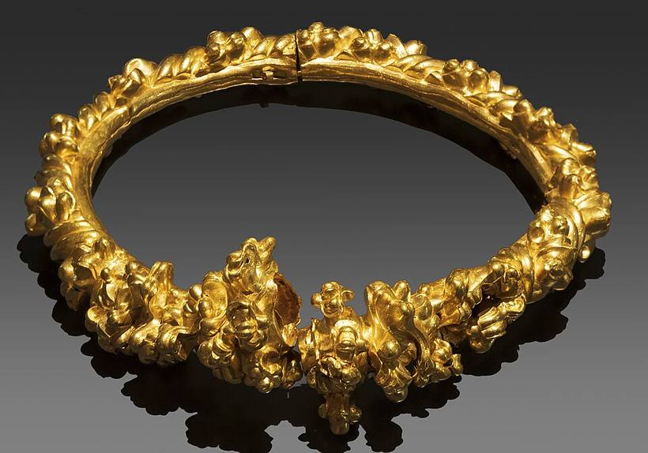
展览 · 迪拜 L'ÉCOLE《Recreating Gesture: Crafting a Gold Necklace from the Iron Age》用24K金复制2000多年前的凯尔特蒙唐金项圈,展出工具和每一步工序,还能上手试 · 免费 · 2026.11.5–2027.4.24(以官网为准);图为同在法国塔恩省出土的高卢金项圈(图卢兹圣雷蒙博物馆) 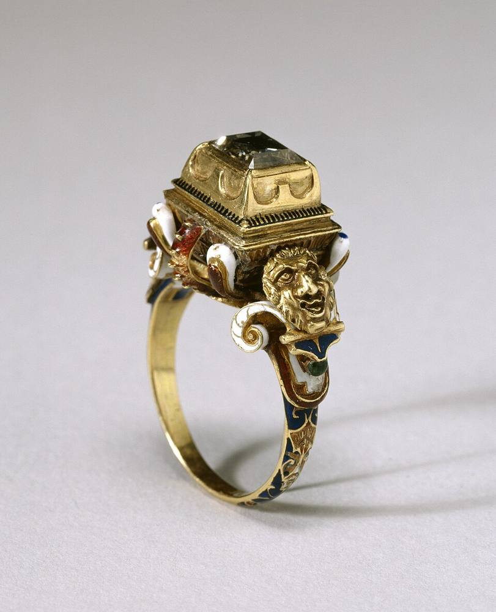
技巧 · 台面切 Table cut把八面体钻石的顶尖磨平成一个方形台面:文艺复兴时最常见的切法,黑亮如镜而不是闪;图为沃尔特斯艺术博物馆藏台面切钻石戒指 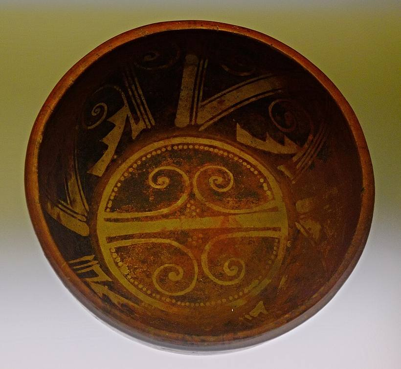
资源 · 波哥大黄金博物馆 Museo del Oro哥伦比亚央行所属:3万多件前哥伦布时期金器,鼻饰、胸牌、黄金筏;官网可看藏品;图为在该馆拍摄的金盘 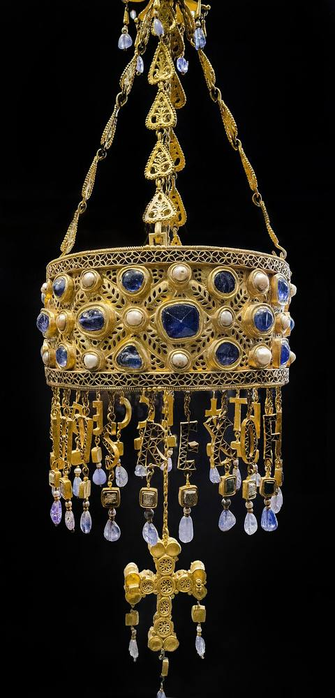
练习 · 雷切斯文托还愿冠 7世纪西哥特王冠(马德里国家考古博物馆):冠圈下挂一圈字母和宝石垂饰;铁丝弯一个圆圈,下面挂一圈长短不一的小珍珠串 2026-11-23 · 百科全书图版、莫泽与伊特鲁里亚 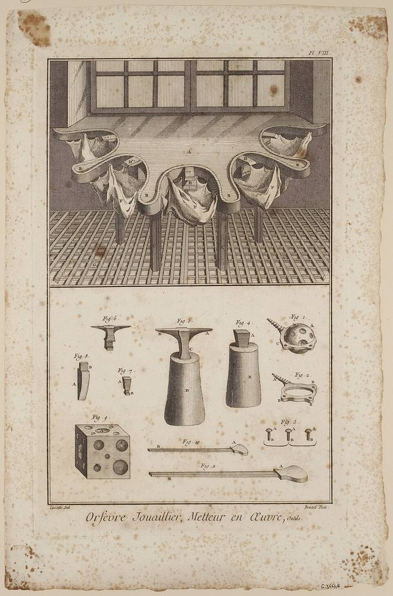
书 · 狄德罗、达朗贝尔《百科全书》图版卷 1762–177218世纪巴黎作坊实录:珠宝匠、镶嵌匠、金匠的工具和工序都有铜版图;公版;图为珠宝镶嵌匠工具图版 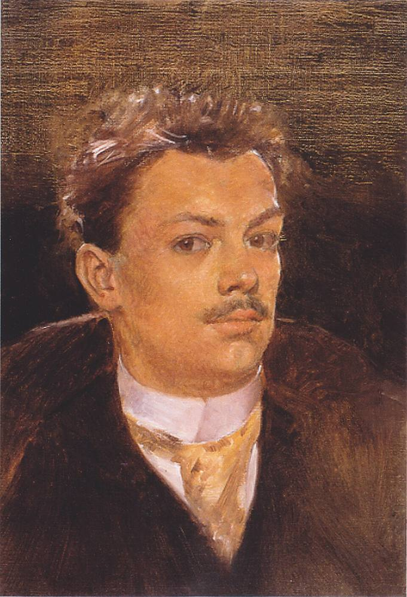
人物 · 科洛曼·莫泽 Koloman Moser1868–1918 维也纳分离派画家、设计师,1903年与霍夫曼创办维也纳工坊,设计过方格几何的银胸针;图为他约1895年的自画像 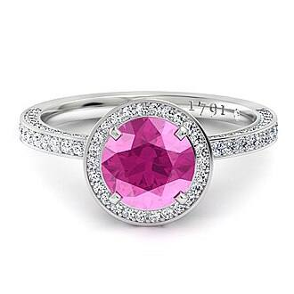
趋势 · “宝格丽粉钻”拍出1480万美元ARTnews/Robb Report 2026.11.13:佳士得日内瓦珠宝拍卖,24克拉祖母绿切工艳彩粉钻戒成交价在估价内;全场4970万美元,低于去年;图为一枚粉钻戒指(示意) 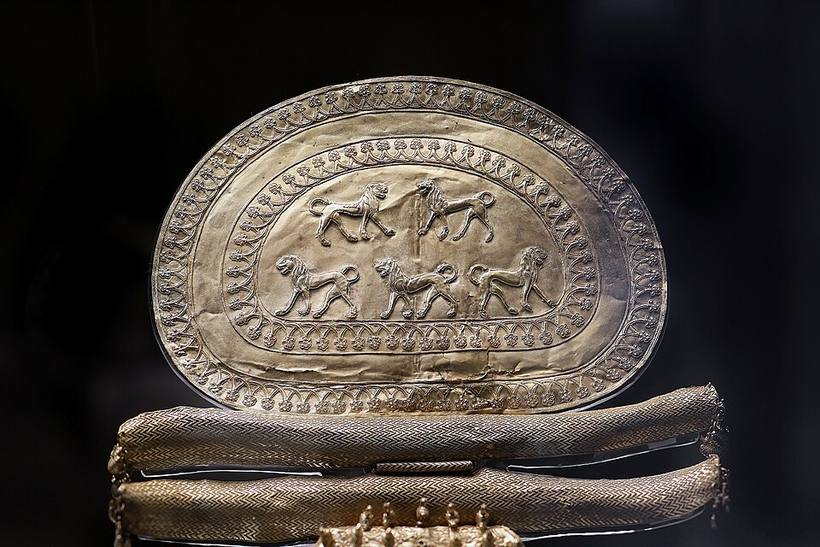
展览 · 圣安东尼奥艺术博物馆《The Etruscans: From the Heart of Ancient Italy》约130件伊特鲁里亚珍品,借自梵蒂冈、卢浮宫、大英博物馆等,含雷戈利尼-加拉西墓金手镯 · 2026.10.31–2027.3.14(以官网为准);图为同墓出土的金扣针 前675–650(梵蒂冈) 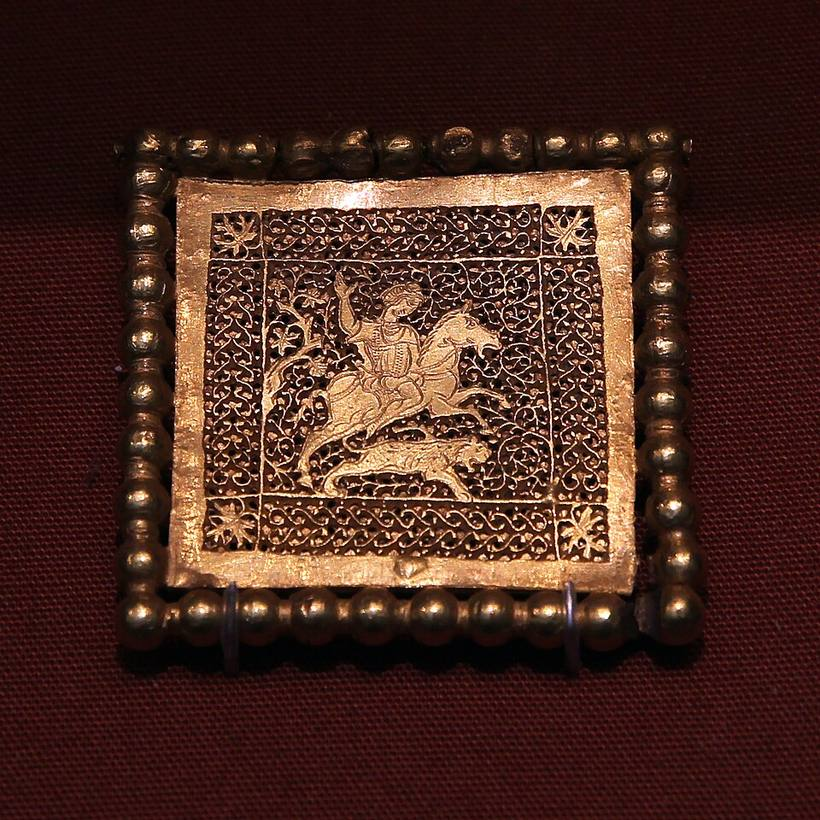
技巧 · 镂空金工 Opus interrasile古罗马晚期:在金片上用小凿凿出密密的孔,留下花纹,像金色蕾丝;图为大英博物馆藏狩狮金牌 4世纪 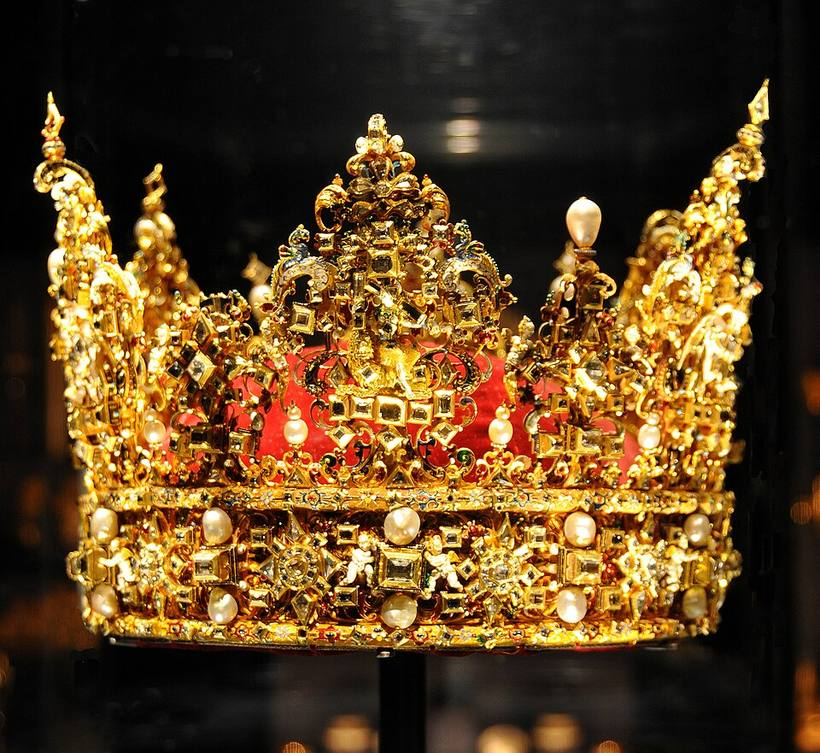
资源 · 哥本哈根罗森堡宫 Rosenborg地下宝库陈列丹麦王冠与王室珠宝;图为克里斯蒂安四世王冠 1596 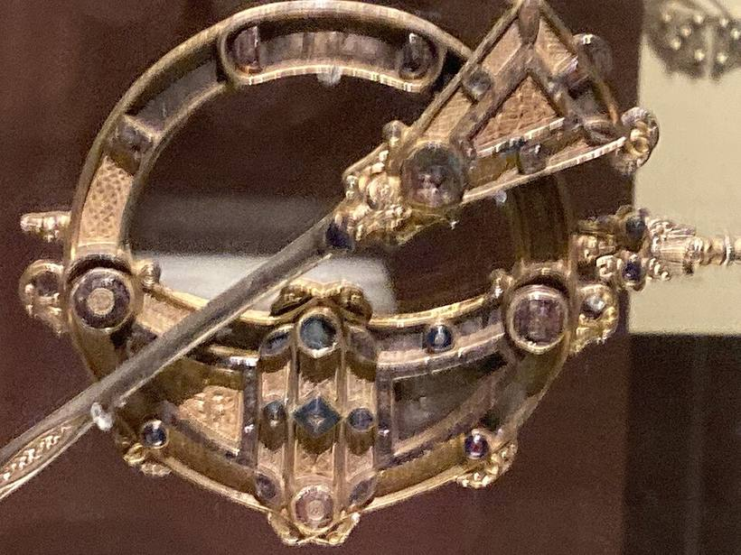
练习 · 塔拉胸针 Tara Brooch约700年(爱尔兰国家博物馆):一个大环 + 一根长别针;铁丝弯环和针,环面上原本镶琥珀、玻璃的位置换成小珍珠 2026-11-21 · 王冠珠宝史、弗罗芒-默里斯与拼合石 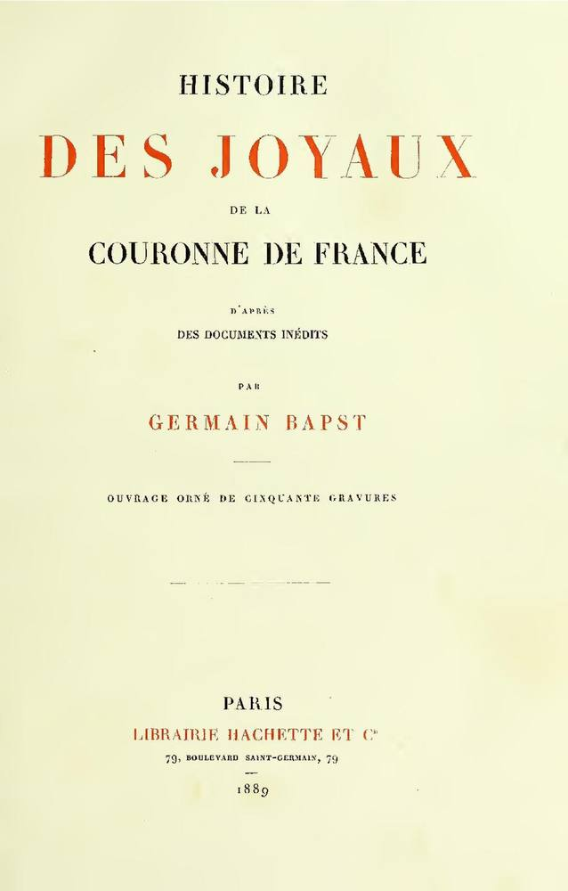
书 · 热尔曼·巴普斯特《Histoire des joyaux de la couronne de France》1889王室珠宝商后人用家藏档案写法国王冠珠宝史,附50幅版画;公版可免费读;图为扉页 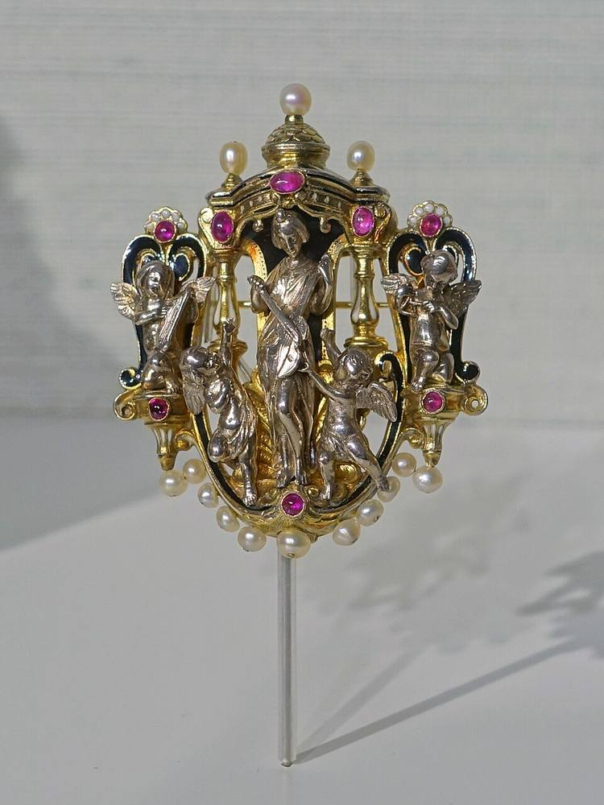
人物 · 弗朗索瓦-德西雷·弗罗芒-默里斯 Froment-Meurice1802–1855 巴黎金匠,浪漫主义与哥特复兴风;图为他的《和谐》胸针 约1847 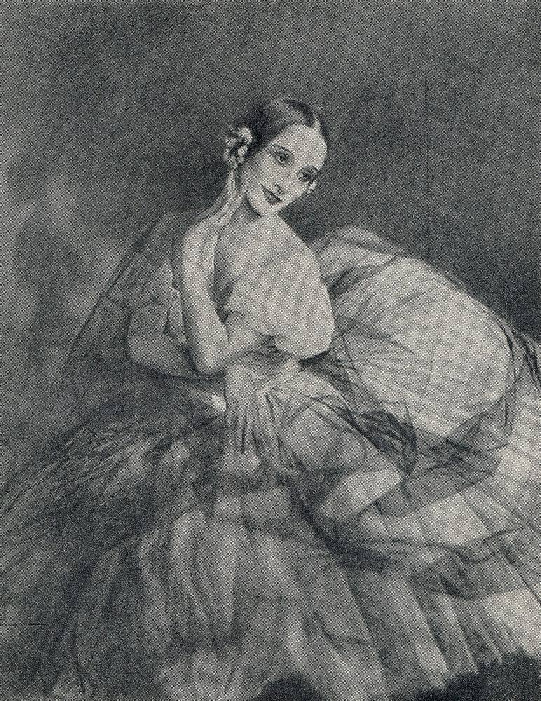
趋势 · 芭蕾舞者胸针美国《Town & Country》2026年11月号:梵克雅宝新出12枚芭蕾舞者胸针,这个题材它从1940年代就在做;图为舞者安娜·巴甫洛娃 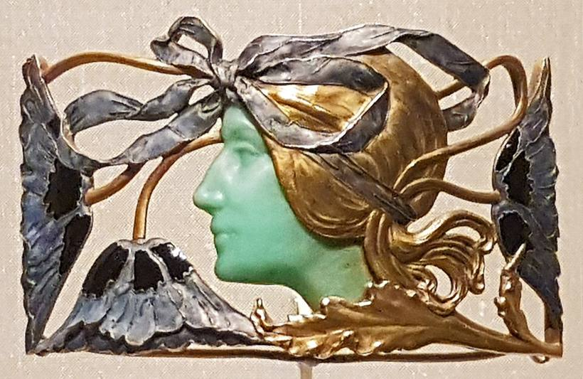
展览 · 荷兰杜斯堡拉利克博物馆《MAGNIFICENT JEWELS!》拉利克及同时代人的新艺术、装饰艺术首饰约130件,翻修后重开首展 · 至2027.6.27(以官网为准);图为拉利克女子头像胸针 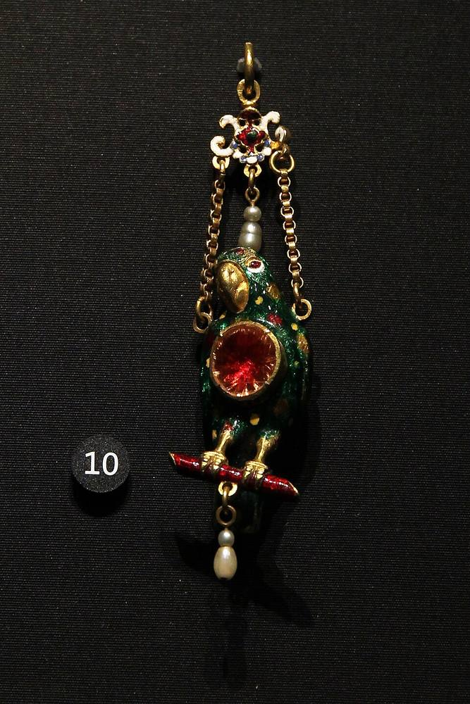
技巧 · 拼合石 Triplet上层水晶 + 红色衬箔,冒充红宝石;图为V&A藏鹦鹉吊坠,中间红石就是拼合石 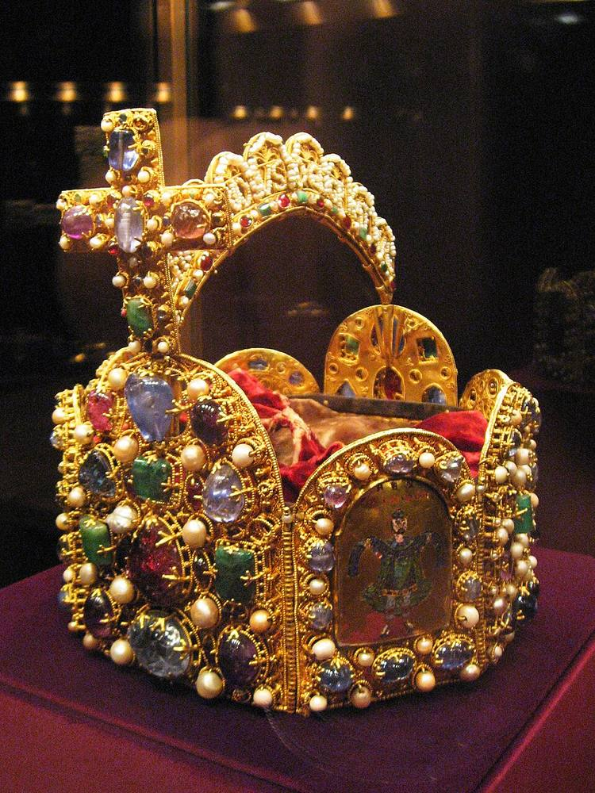
资源 · 维也纳皇家宝库 Kaiserliche Schatzkammer霍夫堡宫内:神圣罗马帝国皇冠和哈布斯堡珍宝;图为帝国皇冠 练习 · 埃伊纳“动物之主”金吊坠约前1850–1550(大英博物馆):一人双手各握一只水鸟,下挂五个圆片;铁丝弯人形和两只鸟,圆片换成五颗小珍珠 2026-11-19 · 马歇尔目录与盘卷金丝 书 · F.H. 马歇尔《Catalogue of the Jewellery, Greek, Etruscan, and Roman》1911大英博物馆古希腊、伊特鲁里亚、罗马首饰目录,含图版;公版可免费读;图为扉页 人物 · 文策尔·雅姆尼策尔 Wenzel Jamnitzer约1508–1585 纽伦堡金匠:擅长把蜥蜴、草叶等实物翻模做成银器;图为诺伊沙泰尔约1562年所绘肖像 趋势 · 盒式吊坠又流行《National Jeweler》等2026年报道:可打开的locket被重新设计,有的仍放肖像,也有新的玩法;图为金质盒式吊坠,内有微型肖像与发丝 展览 · 华盛顿希尔伍德庄园《Gold: Celebrating 50 Years of Beauty at Hillwood》馆藏金器、首饰与当代作品并置,讲黄金作为材料和颜色的历史 · 2027.2.13–6.13(以官网为准) 技巧 · 盘卷金丝 Cannetille19世纪上半叶:把极细金丝绕成小弹簧、小圈,拼出轻盈的表面;可借铁丝绕密圈来练;图为金质盘卷戒指(荷兰国家博物馆) 资源 · 伦敦华莱士收藏 Wallace Collectionwallacecollection.org:免费,赫特福德府里有18世纪金盒、首饰和法国工艺,官网可检索 练习 · 马里亚蜜蜂金饰克里特马里亚出土,约前1800–1700:两只蜜蜂相对,中间一颗蜜球,翅下和腹下挂小圆片;铁丝弯两只虫,中心一颗珍珠,三个小圆可挂小片或小珠
2026-11-17 · 罗曼诺夫蓝宝石与步摇 书 · 汉斯·科拉尔特《Monilium bullarum inauriumque…》1581安特卫普出版的文艺复兴吊坠图样集,共10幅铜版;图为其中一幅(大都会,CC0) 人物 · 吕西安·法利兹 Lucien Falize1839–1897 巴黎金匠:受日本和波斯艺术影响,做彩色掐丝珐琅首饰;图为他的波斯风珐琅手镯 趋势 · “罗曼诺夫蓝宝石”拍出490万美元美国 National Jeweler 2026.11.13:197.80克拉沙俄皇室蓝宝石11月11日在苏富比日内瓦拍出412万瑞郎,远超估价;有来历的历史珠宝更受追捧;图为曾佩戴它的玛丽亚·费奥多罗芙娜皇后 展览 · 伦敦金匠公会《Making Good and True》金匠公会成立700年:学徒、纯度印记(hallmark)、瘟疫与大火中的金匠 · 2027.3.15 开幕 · 金匠公会大厅(以官网为准) 技巧 · 玳瑁嵌金 Piqué把细金银钉、金银片压进加热变软的玳瑁里,18世纪那不勒斯最出名;玳瑁今已禁止贸易,可借这种“点+线”做法 资源 · 剑桥菲茨威廉博物馆线上藏品fitzmuseum.cam.ac.uk:可查古代到近代的戒指、首饰和宝石雕刻 练习 · 牛头鹿角金步摇照这件北朝金冠饰:铁丝做枝杈,每个枝头挂一片金属叶或一颗小珍珠,头一动就摇;内蒙古达茂旗出土
2026-11-15 · 普热图谱与错金银 书 · 普热《Traité des pierres précieuses》1762巴黎珠宝匠写的宝石与首饰设计书,79幅铜版图;图为书中花束胸针图样 人物 · 约瑟夫·霍夫曼 Josef Hoffmann1870–1956 维也纳建筑师,1903年与科洛曼·莫泽等创办维也纳工坊:镂空方格、几何造型的银饰;图为奥尔利克1903年画的他 趋势 · 复古“门环”耳环澳大利亚 ELLE 2026.11.11:梅根戴一副80年代迪奥古董仿珠宝门环耳环,装饰艺术风大耳环和古董仿珠宝走俏;图为当代仿装饰艺术风金耳环 展览 · 波尔图《Coleção IFC: Matéria de Sonhos》葡萄牙私人收藏的200多件17–19世纪首饰首次公开 · 至2027.1.31 · 苏亚雷斯·多斯·雷斯国家博物馆(以官网为准);图为葡萄牙花丝“维亚纳之心”局部 技巧 · 错金银在青铜上刻槽,把金银丝、金银片嵌进去再磨平;战国到汉代最盛;图为大都会藏错金银嵌松石带钩 资源 · 苏格兰国家博物馆线上藏品nms.ac.uk:可查苏格兰史前到中世纪的金银首饰;图为约公元700年的亨特斯顿胸针 练习 · 中世纪网格发罩照这尊雕像两鬓的网格发罩:铁丝编小方格,每个交叉点缀一颗小珍珠,做发夹或耳饰;图为卢浮宫藏波旁的约安娜像,14世纪
2026-11-13 · 特洛伊黄金与双环戒 书 · 亨利·维弗尔《La bijouterie française au XIXe siècle》1906–08珠宝商兼收藏家写的三卷本19世纪法国珠宝史,公版可读;图为勒莫尼耶为欧仁妮皇后婚礼做的大胸针 人物 · 海因里希·施里曼 Heinrich Schliemann1822–1890 德国商人出身的考古者:1873年在特洛伊挖出“普里阿摩斯宝藏”,让妻子索菲亚戴上拍照;后来证明这批金饰比特洛伊战争早约一千年 趋势 · 字母戒指英国 Vogue 2026.11.11:字母项链之后,首字母做成戒指;老样板是安妮·博林肖像里的 B 字珍珠吊坠(伦敦国家肖像馆) 展览 · 克利夫兰艺术博物馆《Silver, Gold, and Gems》首次常设展出非洲各地金银首饰:阿坎金饰、马格里布宝石、古埃及发饰、埃塞俄比亚银项链(以官网为准);图为阿散蒂“灵魂盘” 技巧 · 双环戒 Gimmel ring两三个环扣在一起:分开是几枚,合上是一枚;16–17世纪常作订婚戒 资源 · 大都会《Heilbrunn 艺术史时间线》metmuseum.org/toah:按年代和地区写的艺术史短文,配馆藏图,首饰史可按时代查;图为大都会藏古埃及宽领 练习 · 特洛伊大头冠照这顶头冠:铁丝弯一条额带,垂下十几条细链,每条末端挂一颗小珍珠
2026-11-11 · 自学更新 2026-11-11 书 · 克莱尔·菲利普斯《Jewelry: From Antiquity to the Present》1996V&A 策展人写的简明首饰通史,薄而全;图为文艺复兴十字吊坠(大都会藏) 人物 · 伊丽莎白·特雷斯科 Elisabeth Treskow1898–1992 德国金匠,复兴古代粒金工艺;1949年设计德国足球冠军奖盘 Meisterschale;图为她工坊1932年的项链 趋势 · 鸡尾酒表回潮美国 Vogue 2026.11.10:小巧、像首饰的晚装表又流行,白天也戴;图为梵克雅宝装饰艺术风吊坠表 展览 · 科隆 MAKK《Faszination Schmuck》7000年首饰370件,含特雷斯科旧藏 · 2026.11.19 起(以官网为准);图为博物馆内景 技巧 · 立体包金珐琅 Émail en ronde bosse白色不透明珐琅包在立体金胎上;图为邓斯特布尔天鹅珠宝,约1400年,大英博物馆藏 资源 · 牛津古典艺术研究中心宝石库carc.ox.ac.uk:古代与新古典凹雕宝石,可按收藏、题材、材质检索;图为红玉髓凹雕(大都会藏) 练习 · 文艺复兴金链照这条16世纪金链:铁丝绕成一节节椭圆小环串起来,每隔五节夹一颗小珍珠
2026-11-09 · 自学更新 2026-11-09 书 · 黛安娜·斯卡里斯布里克《Tiara》2000珠宝史学者写冠冕史:从古代花冠到王室与晚宴冠冕;图为大都会藏19世纪罗马浮雕冠冕套饰 人物 · 阿尔丰斯·穆夏 Alphonse Mucha1860–1939 新艺术画家:给莎拉·伯恩哈特设计蛇形手镯,由富凯 Fouquet 制作;也给富凯设计过整间店 趋势 · 发饰回潮英国 Vogue 伦敦时装周2026秋冬街拍:发箍、冠冕、发饰配朋克风衣服;图为大都会藏冠冕 展览 · 伦敦博物馆 Smithfield 新馆《齐普赛宝藏》近500件1600年前后珠宝,首次最全常设展出 · 2026.11.28 起(以官网为准);图为1909年的齐普赛街 技巧 · 密钉镶 Pavé很多小钻紧挨着铺满表面,把金属托几乎全藏住,看上去像一片光 资源 · 艾尔米塔什博物馆线上藏品hermitagemuseum.org:斯基泰金饰、法贝热等藏品可在线检索 练习 · 穆夏式发箍照《诗》里的发间花冠:铁丝弯一条发箍,两侧绕几片叶子,点三颗小珍珠
2026-11-07 · 自学更新 2026-11-07 书 · 孔兹《The Curious Lore of Precious Stones》1913宝石传说与迷信合集,公版免费读 人物 · 路易·卡地亚 Louis Cartier1875–1942:卡地亚第三代,推坦克表与几何装饰艺术珠宝 趋势 · 贴颈雕塑项圈2027春夏:卡在锁骨上的金属或串珠硬领,替代细链;图为伊比利亚金项圈 展览 · 里根图书馆《Diana: Love Life Legacy》礼服与珠宝等700多件 · 2026.11.7–2027.5.31 · 加州西米谷(以官网为准) 技巧 · 凸面切 Cabochon宝石磨成光滑圆顶、底面平整,不刻小刻面;适合月光石、玉髓、珍珠感造型 资源 · 西班牙国家考古博物馆man.es:哈韦亚宝藏等伊比利亚金饰高清图可查 练习 · 包边镶铁丝绕一颗椭圆珍珠一圈当包边,两端拧成戒圈或耳钉脚
2026-11-05 · 自学更新 2026-11-05 书 · 孔兹《Rings for the Finger》1917蒂芙尼宝石专家写的戒指史:古埃及到20世纪,订婚、纪念、印章戒都有,公版免费读 人物 · 查尔斯·刘易斯·蒂芙尼 Charles Lewis Tiffany1812–1902:1837年在纽约开店,人称“钻石之王”;1886年推出六爪单钻戒;图为他约1902年 趋势 · 羽饰 Aigrette17–18世纪起流行,戴在帽上或发间,像一束竖起的羽毛;1900年代又流行一次 展览 · 莫里斯博物馆《Tiffany: Luminary of the Gilded Age》蒂芙尼之子路易斯·康福特·蒂芙尼:玻璃、金属、首饰 · 2026.11.19–2027.4.18,美国新泽西(以官网为准) 技巧 · 颤动镶 En tremblant花朵装在细小弹簧上,人一动花就颤,钻石跟着闪;18–19世纪流行 资源 · 耶鲁大学美术馆线上藏品artgallery.yale.edu:公版藏品的高清图免费下载,含古代到现代首饰 练习 · 古希腊金叶花冠铁丝弯一个半圆当枝,上面绕满小叶片圈,点几颗小珍珠当果子
2026-11-03 · 自学更新 2026-11-03 书 · 《Modern Design in Jewellery and Fans》1902英国《The Studio》特刊:1900年前后欧洲新艺术珠宝大合集,公版可免费读;图为书中维弗尔的发梳和吊坠 人物 · 丹尼尔·米尼奥 Daniel Mignot约1590年代在奥格斯堡出版吊坠设计版画,给各地金匠当样本;图为轮形吊坠设计 趋势 · 仿金 Pinchbeck18世纪伦敦钟表匠平奇贝克发明铜锌合金,颜色像金、价钱便宜,中产也能戴“金”饰;图为他的画像 展览 · 匹兹堡弗里克美术馆《Paradox of Pearls》文艺复兴到镀金时代的珍珠:信仰、权力、表演 · 2027.11.6–2028.2.27,门票2026年11月开售(以官网为准) 技巧 · 硬石镶嵌 Pietra dura把彩色石头切成薄片,拼成花鸟图案;1588年佛罗伦萨设专门工坊;图为硬石镶嵌首饰盒 资源 · 瑞典历史博物馆线上藏品samlingar.shm.se:维京时代胸针、项链高清图,很多可免费用;图为维京等臂胸针 练习 · 古埃及圣甲虫戒指一颗椭圆大珍珠当甲虫背,铁丝穿过两端绕成戒圈,丝头卷两个小圈收尾
2026-11-01 · 自学更新 2026-11-01 书 · 德·布特《Gemmarum et lapidum historia》1609鲁道夫二世御医写的宝石大全:切磨、鉴别、产地;图为书中切石器 人物 · 弗雷德里克·宝诗龙 Frédéric Boucheron1830–1902:1858年在巴黎王宫开店,1893年首家搬进旺多姆广场;图为莫罗1895年绘 趋势 · 刻诗戒 Posy ring15–17世纪英国:戒圈刻一句短诗送爱人;今天“内圈刻字”还在流行;图为中世纪金戒 展览 · 美国弗拉格勒博物馆《Gilded Age Jewelry》镀金时代珠宝150余件:冠冕,卡地亚、蒂芙尼、宝诗龙 · 2027.2.18–5.2(以官网为准) 技巧 · 玫瑰切工 Rose cut底面平,顶上三角小面拱成圆顶,像含苞的玫瑰;16–18世纪钻石主流切法 资源 · 阿什莫林博物馆线上藏品collections.ashmolean.org:牛津大学博物馆,古代到文艺复兴的戒指、胸针免费看图 练习 · 吊灯耳环 Girandole上面一个小圆,下面挂三颗水滴:铁丝弯框,挂三颗珍珠;图为18世纪末设计稿
2026-10-31 · 自学更新 2026-10-31 书 · 老普林尼《博物志》第37卷 约77古罗马人怎样看宝石:钻石、珍珠、琥珀的产地与传说;图为15世纪佛罗伦萨手稿 人物 · 菲利普·沃尔弗斯 Philippe Wolfers1858–1929 比利时新艺术珠宝:珐琅翅膀+宝石+垂珠;图为 Nikè 胸针 1902 趋势 · 18世纪仿钻 Paste铅玻璃磨成“钻石”,斯特拉斯 Strass 让它流行;贵族也戴;图为英国鞋扣 约1780–85 展览 · 柏林新博物馆《The Crown of Kerch》黑海民族大迁徙时期金饰,镶石榴石的刻赤王冠 · 至2027.9.22(以官网为准) 技巧 · 内填珐琅 Champlevé在铜面上挖槽,填彩色珐琅烧制;12世纪利摩日最有名 资源 · Portable Antiquities Schemefinds.org.uk:英国民间出土文物登记库,上千枚古戒指免费看图 练习 · 古罗马“响铃”耳环 Crotalia一根横杆挂两三颗珍珠,走路相碰作响;用铁丝做一对
2026-10-29 · 自学更新 2026-10-29 书 · 琼·埃文斯《A History of Jewellery 1100–1870》1953中世纪到维多利亚,按年代讲欧洲首饰;图为中世纪环形胸针(大都会藏) 人物 · 马里-艾蒂安·尼托 Nitot1750–1809 巴黎珠宝商,拿破仑御用,尚美 Chaumet 的源头 趋势 · Toi et Moi“你和我”双石戒两颗宝石并排各占一边;1796拿破仑送约瑟芬一枚,近年订婚戒又流行 展览 · 旧金山 de Young《Treasures of the Pharaohs》130件古埃及珍宝,含金首饰与新出土“黄金之城”文物 · 2026.8.1–2027.1.31(以官网为准) 技巧 · 凹雕 Intaglio和浮雕相反:图案往宝石里刻,印在蜡上就成凸起的印章 资源 · 维也纳艺术史博物馆线上藏品khm.at:哈布斯堡珍宝,含切利尼金盐盒 Saliera,免费查高清图 练习 · 明代花头簪照明代银鎏金簪:铁丝盘出小花头,中心嵌一颗珍珠
2026-10-27 · 自学更新 2026-10-27 书 · 阿方索十世《宝石书》Lapidario约1250 卡斯蒂利亚:按星座讲宝石,彩绘手稿藏埃斯科里亚尔 人物 · 达戈贝特·佩赫 Dagobert Peche1887–1923,1915加入维也纳工坊:叶片、卷须、繁花,金银薄片锤出 趋势 · 腰链 Chatelaine18–19世纪:腰间挂一串链,吊表、钥匙、剪刀、香盒;实用即装饰 展览 · 梅斯 La Cour d'Or 博物馆《Éclats messins. Vever》维弗尔家族珠宝200年,约200件 · 免费 · 2026.11.12–2027.5.18(以官网为准)(图为馆内) 技巧 · 机刻珐琅 Guilloché先用车床刻出放射/波纹细线,再上透明珐琅;法贝热常用 资源 · 盖蒂博物馆 Open Contentgetty.edu:公有领域藏品高清图免费下载,含古希腊、托勒密金饰 练习 · 赫拉克勒斯结希腊化金戒:两股丝互套成结;用铁丝弯一个结,中间嵌一颗珍珠
2026-10-23 · 自学更新 2026-10-23 书 · C. W. King《Antique Gems and Rings》1872古代宝石雕刻与戒指专书,两卷带插图;公版免费读;图为原书封面 人物 · 让-巴蒂斯特·塔韦尼耶 Tavernier1605–1689 法国宝石商,六下东方;1668把大蓝钻卖给路易十四,后来的“希望之钻”源头 趋势 · 蛇形首饰古希腊已有;1839阿尔伯特送维多利亚蛇形订婚戒,蛇咬尾=永恒;图为古希腊蛇形金戒 展览 · 白金汉宫国王画廊《Royal Jewellery: From Coronations to Keepsakes》500年英国王室珠宝300余件 · 2027.6.25–2028.3.19 · 11月3日起公开售票(以官网为准) 技巧 · 浮雕 Cameo在分层的贝壳或玛瑙上雕:浅色层雕人像,深色层留作底 资源 · 卢浮宫线上藏品collections.louvre.fr:近50万件藏品免费检索,含王室珠宝与古代首饰 练习 · 古埃及宽领照阿霍特普王后宽领(约前1550):小珍珠一排排加长,做半月形领饰
2026-10-21 · 自学更新 2026-10-21 书 · H. Clifford Smith《Jewellery》1908公版通史:古埃及到19世纪,archive.org 免费读 人物 · 阿奇博尔德·诺克斯 Archibald Knox马恩岛人,1899起为 Liberty 设计 Cymric 银器:凯尔特缠枝纹+珐琅 趋势 · 1920年代长珍珠链Sautoir 长链垂到腰,可绕可甩;露易丝·布鲁克斯 1928 展览 · 斯图加特符腾堡州立博物馆《Decoration and Symbols: What Adorns Men》男性首饰史:石器时代到今天 · 2026.10.17–2027.4.25(以官网为准) 技巧 · 微马赛克 Micromosaic罗马:彩色玻璃拉成细丝切成小粒,拼出风景;19世纪“壮游”纪念品 资源 · 芝加哥艺术博物馆 Open Access5万余件 CC0 藏品图免费下载 + 公开 API 练习 · 拜占庭珍珠耳环照大都会藏金耳环:铁丝弯椭圆框,外圈穿一圈小珍珠,中间吊一颗主石
2026-10-19 · 自学更新 2026-10-19 书 · 米利希《安娜公爵夫人珠宝图册》1552–55巴伐利亚宫廷珠宝逐件彩绘;巴伐利亚州立图书馆藏,可在线看;图为原装封面 人物 · 卡洛·朱利亚诺 Carlo Giuliano那不勒斯人,伦敦开店:文艺复兴复兴风,珐琅+彩宝+细链(约1831–1895) 趋势 · 切面钢首饰 Cut steel18世纪英国伍德斯托克、伯明翰:钢钉磨出小切面铆成一片,便宜又像钻石般闪 展览 · 上海博物馆东馆《环宇璀璨:大都会艺术博物馆珠宝珍藏展》192件(组)· 4000年 · 五大洲 · 2026.11–2027.5 · 浦东(以官网为准) 技巧 · 透窗珐琅 Plique-à-jour无底板,珐琅悬在金丝格里,透光像彩色玻璃;拉利克《银莲花》约1899–1900 资源 · 克利夫兰艺术博物馆 Open Access数万件 CC0 藏品图免费下载,含首饰;官网+开放 API 练习 · 半环胸针照维京半环胸针:铁丝弯一个开口环+一根别针,针从缺口穿过转90°锁住
2026-10-17 · 自学更新 2026-10-17 书 · 勒加雷《Livre des Ouvrages d'Orfèvrerie》1663路易十四时代首饰图集:蝴蝶结、垂珠 人物 · 乔治·杰生 Georg Jensen丹麦银匠:银+琥珀+玛瑙,自然纹样(1904–08) 趋势 · 柏林铸铁首饰约1813–15:“我献黄金换铁”,黑色铁花成时尚 展览 · 尚蒂伊孔代博物馆《The Pink Diamond》“大孔代”粉钻 · 2026.10.17–2027.1.3(以官网为准) 技巧 · 乌银 Niello黑色硫化物填进金银刻线;拜占庭项链 · 6–7世纪 资源 · 德累斯顿绿穹珍宝馆 + SKD Online Collection巴洛克珍宝,线上藏品库可检索 练习 · 花篮戒 Giardinetti照18世纪花篮戒:铁丝编小篮,嵌3颗小珍珠
2026-10-15 · 自学更新 2026-10-15 书 · 特奥菲卢斯《论各种技艺》约1100–1120中世纪金工手册:錾、铸、拉丝、珐琅 人物 · 小汉斯·荷尔拜因为亨利八世宫廷画首饰设计稿(大英博物馆藏) 趋势 · “恋人之眼”约1790–1820英国:只画眼睛,藏住身份 展览 · 多哈 M7《Around the World in Jewellery》2026.10.27–12.26 · 卡塔尔博物馆 × 梵克雅宝珠宝艺术学院(以官网为准) 技巧 · 石榴石掐格镶 Cloisonné萨顿胡肩扣 · 约625–630 · 金格里嵌石榴石 资源 · 大英博物馆 Collection Online免费检索:荷尔拜因设计稿、萨顿胡宝藏 练习 · 异形珠当身体照坎宁珠宝:一颗巴洛克珍珠+铁丝做小人物
2026-10-13 · 自学更新 2026-10-13 书 · 欧文·琼斯《装饰的法则》1856世界纹样图谱,公版可下载 人物 · C.R. 阿什比工艺美术运动 · 1888 创手工艺行会 趋势 · 埃及复兴风1922 图坦卡蒙墓后再掀热潮 展览 · 斯特拉斯堡《王后项链事件》2026.11.20–2027.3.15 · 罗昂宫(以官网为准) 技巧 · 昆丹镶 Kundan莫卧儿:纯金箔包镶宝石,背面珐琅 资源 · 沃尔特斯艺术博物馆免费入馆 · 藏品图可免费下载 练习 · 设计一套小“套饰”一个母题做项链+耳环+胸针(珍珠+铁丝版)
王后项链展巡至巴黎国家档案馆:2027.4.7–7.12(以官网为准)
2026-10-11 · 自学更新 2026-10-11 书 · 切利尼《金工论》1568作者名作:维也纳盐瓶 人物 · 卡斯泰拉尼19世纪仿古典(考古复兴)珠宝 趋势 · 维多利亚悼念首饰发丝、黑玉,情感入首饰 展览 · 水晶桥《Nature Adorned》蒂芙尼2026.10.9–2027.3.29 · 免费(以官网为准) 技巧 · 金珠粒工艺伊特鲁里亚细金珠焊接 资源 · 大都会开放图库 Open AccessCC0 高清首饰图可下载 练习 · 临摹齐普赛宝藏描一段珐琅链节,想成铁丝+珍珠版


.jpg){kind=link}
.jpg){kind=link}


.jpg){kind=link}
.jpg){kind=link}
.jpg){kind=link}

.jpg){kind=link}


.jpg){kind=link}


_by_Alexander_Calder,_c._1928,_brass_wire_and_wood.JPG){kind=link}


_Torque_de_Lasgraisses_-_Mus%C3%A9e_Saint-Raymond,_25043.jpg){kind=link}

.jpg){kind=link}
.jpg){kind=link}


.jpg){kind=link}

.JPG){kind=link}
_(8704963755).jpg){kind=link}
_-_Nicolas_Neufchatel_(MAH,_Geneva).jpg){kind=link}
.jpg){kind=link}


.jpg){kind=link}


.jpg){kind=link}


.jpg){kind=link}

.jpg){kind=link}

_1800s,_before_1871;_pin_added_later.jpg){kind=link}
_MET_LC-1974_356_649-002.jpg){kind=link}

,_original_from_Troy_II,_c._2300_BC_(28679204881).jpg){kind=link}


.jpg){kind=link}


.jpg){kind=link}


.jpg){kind=link}

_(page_6_crop).jpg){kind=link}
.jpg){kind=link}


._Private_collection.jpg){kind=link}

.jpg){kind=link}


.jpg){kind=link}


.jpg){kind=link}

.jpg){kind=link}


.png){kind=link}
_-_The_Empress_Josephine_-_P315_-_The_Wallace_Collection.jpg){kind=link}
_(21043282819).jpg){kind=link}


.jpg){kind=link}


.jpg){kind=link}


.jpg){kind=link}
.jpg){kind=link}

,_1904%E2%80%9308_(CH_18633609).jpg){kind=link}


_(14587326250).jpg){kind=link}


,_India,_possibly_Rajasthan,_Mughal_period,_18th_century,_gold,_diamonds,_rubies,_emeralds,_enamel_-_Royal_Ontario_Museum_-_DSC04551.JPG){kind=link}


_with_animals_in_granulation_MET_DP119622.jpg){kind=link}